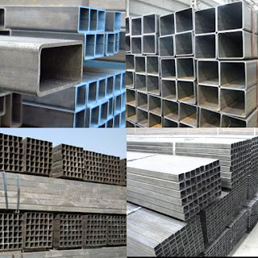
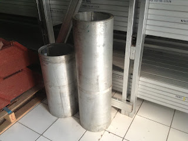
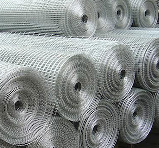

Jual Atap Lengkung di Banjarmasin ☎ 0822 4582 0777 (Rinanti)
Salah satu komponen terpenting dari sebuah bangunan baik itu kecil, sedang, besar maupun megah sekalipun pasti memerlukan atap. Tergantung setiap kebutuhannya, bagi bangunan yang megah mungkin beton akan menjadi pilihan. Keberadannya pun sudah menggeser kayu dan bahkan sewaktu-waktu dapat menggantinya. Pada kesempatan kali ini saya akan membahas beberapa jenis atap, seperti atap galvalum, atap lengkung, seng gelombang, plat seng & plat galvalum dan masih banyak lagi. Berat atap yang saya maksud disini tidaklah seberapa, karena berat yang tertopang pada galvalum tersebut sudah tersalurkan dengan baik sehingga tidak akan membebani atap maupun galvalum. Maka simaklah artikel yang akan saya ulas berikut ini. Apa yang terjadi? Tentu anda tahu, atap tersebut tidak akan bertahan lama dan bahkan bisa langsung roboh karena tidak adanya pondasi yang menyangganya. Maka beberapa penjabaran kami dapat anda simak.
Distributor & Supplier Atap Lengkung

Fungsi atap lengkung Banjarmasin ialah untuk menutupi seluruh bagian atas dari sebuah bangunan. Terkadang atap lengkung ini juga sangat berguna bila dipakai dengan hal demikian.
Atap lengkung terbuat dari bahan galvalum dan zincalum yang sudah terkomposisi dengan sempuran. Salah satu jenisnya adalah atap lengkung Banjarmasin. Jarang sekali kami melihat bahwa atap galvalum lengkung ini dapat jatuh karena tiupan angin kencang.
Atap lengkung biasa dapat anda temukan pada bangunan-bangunan yang dibuat untuk keperluan olahraga. Salah satunya adalah pada stadion bola maupun kolam renang. Anda sudah berada di tempat yang tepat. dis.or.id adalah distributor terpercaya untuk anda. Maka anda sudah berada di tempat yang tepat.
Info Pemesanan Selengkapnya
Google Maps: https://www.google.com/maps/d/u/0/viewer?mid=1jTQUf9ULWdUIa8iDLwabVtcOdrQf8Eme&ll=-7.272623401464149%2C112.6482284&z=17
Note: https://www.facebook.com/notes/distributor-of-industrial-supply/pabrik-supplier-atap-lengkung/1782710675362145/
Event: https://www.facebook.com/events/137280070316926/
Portfolio Produk: https://www.facebook.com/pg/DistributorOfIndustrialSupplyDIS/photos/?tab=album&album_id=1683772021922678
Distributor & Supplier Besi Beton

Besi beton adalah besi yang digunakan untuk penulangan konstruksi beton atau biasa dikenal sebagai fungsi badan bertulang. Besi Beton mengandung banyak batang tulangan yang dapat memikul beban berat. Dan besi beton polos memiliki penampakan benda dengan permukaan licin atau tidak bersirip.
Besi beton polos sangat jarang digunakan kecuali digunakan sebagai kolom.
Salah satu cara untuk mendapatkannya adalah dengan membeli di dis.or.id. Anda bisa mendapatkan besi beton dengan harga yang sangat murah dan terjangkau. Kualitas dan mutunya pun telah terjamin.
Distributor & Supplier Steel Grating

Saat ini, Plat Grating bisa di dapatkan dengan mudah. Umumnya, Grating digunakan untuk kolam renang. Grating ini disusun dari baja berkalit dan dilas di bagian permukaan silangnya. Di mana, Galvanis ini melindungi grating dari korosi maupun karat. Dengan mencaro steel grating kualitas terbaik, pastinya kualitas bangunan yang anda bangun akan lebih kokoh dan tahan terhadap berbagai cuaca. Grating banyak digunakan dalam pembangunan lantai seperti deck, pabrik, tangga, industri, minyak, pertambangan, dan masih banyak lagi.
Kini anda bisa mendapatkan steel dengan mengunjungi dis.or.id.
Distributor & Supplier Pipa (Hitam/Gas, Galvanis)

Manfaat dari pipa hitam galvanis memang banyak sekali untuk kebutuhan konstruksi bangunan. Karena kekuatan yang dimiliki olehnya, tak heran bila pipa hitam banyak digunakan pada kebutuhan konstruksi. Terlihat dari namanya saja, pipa hitam ini memang dibuat khusus untuk kebutuhan pertambangan minyak gas, untuk itu nama lain dari pipa hitam adalah pipa gas. Sifatnya yang tahan karat menjadikan pipa ini dapat diaplikasikan disegala perubahan cuaca Indonesia. Tentukan kebutuhan pipa hitam anda pada kami, tersedia ukuran ½ inc sampai 40 inc. Segera hubungi kami untuk info pemesanan selengkapnya maupun berkonsultasi mengenai kebutuhan pipa secara langsung.
Distributor & Supplier Kawat Bronjong/Gabion

Kawat bronjong sering dianggap sebagai pencegah erosi. Umumnya, kawat ini dipasang di tebing yang rawan sekali mengalami longsor, terutama ketika musim hujan tiba. Ini berbentuk seperti anyaman yang terbuat dari kawat biasa. Hanya saja, Anda harus tahu kawat ini terbuat dari baja. Ini bisa Anda lihat di pinggir-pinggir pantai.
Untuk itu, kini kawat bronjong sangat banyak dibutuhkan pada segal bidang. Jika anda tengah membutuhkna kawat ini, anda bisa saja langsung mengunjungi dis.or.id. Tak hanya itu, kawat bronjong yang disediakn juga terdapat bermacam ukuran.
Distributor & Supplier WF H-beam
.jpg)
Besi ini dijual dengan harga yang cukup murah dan terjangkau sehingga tidak terlalu mahal. Dari sisi kekuatan, jenis besi ini tergolong padat dan kuat selipun di tekan dan di tarik. selain itu, besi ini ternyata memiliki kualitas yang terjamin sehingga tidak diragukan lagi. Anda juga bisa lebih gampang saat memakai besi ini karena sifatnya yang tidak terlalu berat dan bisa dibilang ringan dengan komponen yang seimbang.
Saat membawanya pun Anda akan lebih mudah dan praktis.
Besi Wf berkualitas tinggi bisa anda dapatkan dengan sangat mudah di dis.or.id. Harga yang di patok juga sangat terjangakau, jadi anda tidak perlu mengeluarkan budget terlalu banyak. Disana anda bisa mendapatkan besi wf yang anda inginkan.
Distributor & Supplier Expanded Metal
.JPG)
Expanded metal atau yang dikenal juga dengan grid mesh ini adalah lembaran baja berbentuk jala dengan lubang-lubang yang homogen dan sangat cocok jika digunakan untuk berbagai aplikasi selain dari Pagar BRC. Umumnya dipergunakan sebagai kawat parabola, speaker grill, kawat nyamuk dan lain sebagainya.
Kini anda bisa membeli expanded metal yang anda inginkan dengan mengunjungi dis.or.id. Jenis ini dapat Anda gunakan sebagai pengaman partisi, pagar pembatas, penutup mesin, tanduk kendaraan, dinding panel, angin-angin dan masih banyak lagi.
Distributor & Supplier Plat (Hitam, Kapal, Bordes, Strip)

Berbicara tentang plat besi memang beragam, hal ini di tentukan dari seberapa besar dan tebal plat yang di inginkan. Plat besi bordes juga dikenal dengan checkered plate. Harga plat besi bordes, strip dan plat besi lainnya sangat terjangkau per meter persegi. Plat besi bordes ini saat ini lebih banyak digunakan sebagai bahan pembuatan mobil, terutama mobil pengangkut seperti truk, pick up, dan lain sebagai nya.
Disana terdapat berbagai macam plat yang anda butuhkan dan pastinya dengan harga yang sangat terjangkau. Anda pastinya tidak akan rugi jika membeli plat besi dengan banyak varian dan jenis yang disediakan disana.
Distributor & Supplier Floor Deck (Bondex)

Floor deck ini adalah material yang bisa difungsikan sebagai media pengganti dari material konvensional yang umumnya berbentuk papan lebar, misalnya saja seperti triplek. Floor deck atau yang biasa disebut bondek adalah material yang berfungsi sebagai penyangga lantai cor. Produk material ini berfungsi untuk menggantikan fungsi bekisting pada saat melakukan pengecoran plat pada lantai. Sedangkan untuk panjang dan juga lebarnya ada beberapa variasi.
Floor deck berkualitas tinggi bisa anda dapatkan dengan mudah yaitu mengunjungi situs dis.or.id.
Distributor & Supplier Atap Galvalum

Saat ini bangunan modern minimalis dan properti sudah sering dijumpai menggunakan atap galvalum.
Akan tetapi kelebihan kayu bila dibandingkan dengan atap galvalum adalah kayu memiliki nilai yang lebih tinggi daripada galvalum. Galvalum atau biasa disebut baja ringan, terbukti mempunyai banyak kelebihan jika dibandingan dengan kayu. Kerap kali disebut baja ringan, kekuatannya tidak kalah bila dibandingkan dengan baja konvensional.
Bahkan, setiap rumah khususnya di perumahan sudah banyak yang menggunakan atap galvalum sebagai teras khusus ntuk mobilnya. Jenisnya pun sangat beragam, ukurannya pun juga banyak sehingga gampang untuk menyesuaikan kebutuhan rangka atap anda. Bila bebannya berat maka anda harus memakai galvalum dengan ukuran yang lebih besar. Bahannya yang terkomposisi dengan baik membuatnya tidak berisik bahkan ketika hujan, tahan lama dan anti karat. Disini kami menyediakan galvalum yang tentunya sesuai kebutuhan dan dengan harga yang sangat kompromi khusus untuk anda yang membutuhkannya. Atap galvalum mempunyai banyak tipe, jenis dan ukuran yang sesuai dengan ukuran yang dapat anda pilih.
Distributor & Supplier Truss Canal C
Jadi ketika anda mendengan istilah CNP, diharapkan anda tidak bingung atau merasa rancu lagi, karena pada dasar nya sama. Dengan penggabungan galvalum dengan besi kanal c maka sebuah bangunan bisa menjadi lebih kuat dan berkualitas. Besi kanal C ini lebih banyak di pakai untuk atap sebuah rumah, terutama dalam membangun rangka atap nya. Galvalum memang kerap dijodohkan dengan kanal c, ini dikarenakan keduanya yang saling melengkapi. Satu untuk rangka dan satunya lagi adalah untuk atap. Oleh karena itu, jangan ragu lagi atas kegunaan besi yang satu ini. Bila anda mencari kanal c atau truss maka anda sudah datang ke tempat yang tepat.
Distributor & Supplier Hollow Galvalum

Hollow galvalum adalah galvalum yang berfungsi sebagai rangka atap sebuah bangunan. Sebenarnya ada banyak unsur yang dilibatkan dalam pembuatan hollow galvalum ini, yaitu alumunium, baja, beserta zinc. Untuk memudahkan pemasangan atap, tentunya diperlukan hollow galvalum yang berkualitas bukan?
Jika kita berbicara masalah ketahanan, tentu hollow galvalum jauh lebih kokoh dibandingkan dengan penyangga plafon yang berbahan kayu biasa. Dengan banyaknya cabang supplier kami dapat menjangkau pengiriman sampai ke pelosok Indonesia. Kami menjual Hollow galvalum berkualitas, anti korosi, dan juga jaminan tahan lama. Kami akan mengirim barang pesanan anda sampai pada tujuan dengan aman, cepat dan tepat tujuan. Dengan banyaknya cabang supplier kami dapat menjangkau pengiriman sampai ke pelosok Indonesia.
Distributor & Supplier Seng Gelombang

Apakah anda hendak mendirikan bangunan baru? Sebuah bangunan dapat berdiri tegak kokoh dan bernilai bukan cuman karena dinding dan permukaan lantainya saja. Andapun wajib memperhatikan bagaimana atap bagian bangunan tersebut apakah berkualitas ataukah tidak, atap dengan kualitas rendah akan beresiko kerusakan maupun kebocoran yang pasti merugikan seisi bangunan ruangan tersebut. Tak heran jika seng gelombang melengkapi fiturnya dengan menyediakan beragam ukuran seng gelombang menurut standar SNI. Sedangkan sekarang ini telah tersedia berbagai macam atap bangunan berbentuk seng gelombang yang memiliki banyak keunggulan, baik dilihat dari fungsi maupun harga jual pasarnya.
Dengan seng gelombang kecil, anda tak perlu lagi repot memotong ukuran asli seng gelombang dan menata seng gelombang dengan ukuran yang pas pada atap bangunan. Jika anda membutuhkan seng gelombang kecil ini sekarang juga, maka segera hubungi kami di dis.or.id untuk kepentingan lebih lanjut. Salah satu distributor yang terkenal akan kualitas dan jaminannya adalah dis.or.id anda dapat mengunjungi situs tersebut dan menjelajahinya.
Distributor & Supplier Plat Seng

Seng atau Plat gavalum dapat dikatakan pembaruan dari seng biasa pada umumnya, karena jenis seng ini tidak panas, tidak bising, anti karat, tahan lama dan masih banyak kelebihan lainnya. Harga plat galvanis lembaran akan lebih mahal dibandingkan dengan harga per meter.
Hal ini tidak lain dikarenakan plat galvanis lembaran memiliki ukuran yang lebih luas dan bermeter meter. Jika anda penasaran dengan harga plat galvanis ini, silahkan hubungi customer service kami untuk menanyakannya. Ketebalan plat tentu disesuaikan dengan kebutuhan, pastikan anda membeli plat galvanis dengan ukuran yang anda butuhkan, agar tentunya lebih efisien dalam hal anggaran. Plat gavalum sendiri sering dinilai sebagai pengganti seng biasa terbaik, plat jenis ini sudah banyak digunakan untuk talang, pabrik, rumah, ataupun kebutuhan outdoor lainnnya.
Lalu berapa harga plat galvanis 2018? Bila anda sedang mencari harga terbaru hari ini juga, anda dapat menghubungi kami karena kami menjual plat galvanis, galvalum dengan berbagai ketebalan dan ukuran.
Distributor & Supplier Genteng Metal

Kami akan mengulas seputar tentang genteng metal pasir terbaik. Secara sederhana genteng metal adalah salah satu jeni genteng yang terbuar dari kumpulan berbagai bahan logam dan memiliki ciri kas mengkilat, ringan dan tahan lama. Kami siap melayani pembelian dalam jumlah kecil ataupaun partai besar untuk tiap tiap brand tersebut. Salah satu varian genteng metal yang populer adalah genteng metal pasir, jenis ini dinilai yang terbaik karena sudah terbukti lebih tahan panas, dan juga mampu membantu dalam peredaman suara saat hujan. Apakah mitos itu benar? Faktanya beberapa jenis genteng metal memang menyebabkan rumah terasa lebih panas dan berisik ketika hujan, namun kabar baiknya bila anda memilih menggunakan genteng metal pasir terbaik anda dipastikan akan terhindar dari dua hal tersebut. Apakah anda sedang mencari genteng metal berkualitas? Maka anda berada di tempat yang tepat, silakan kunjungi dis.or.id dan dapatkan info menarik khusus untuk anda yang ingin segera mengetahui keunggulan genteng metal ini.
Silahkan hubungi kami untuk informasi lebih lanjut. Karena kepuasan dan kepercayaan pelanggan adalah segalanya bagi kami. Bila belum percaya, maka anda dapat mengujungi situs official kami di dis.or.id untuk mendapatkan info yang lebih lanjut dan dapatkan penawaran terbaik dari kami khusus untuk anda.
Distributor & Supplier Besi Wiremesh

Jika anda membutuhkan besi lonjor yang membentuk anyaman anda dapat membeli jenis besi wiremesh pada kami. Bentuk anyam dari besi wiremesh tersedia bermacam-macam, ada yang berbentuk kotak ada juga yang berbentuk jajar genjang, setiap jenis besi wiremesh dapat anda pilih sesuai kebutuhan. Manfaat besi wiremesh untuk kebutuhan konstruksi cukup banyak, ia bisa digunakan sebagai penguat dak beton, plat lantai, dan anak tangga. Besi wiremesh terdiri dengan berbagai macam ukuran ketebalan, ketebalan 8 – 10 digunakan untuk bangunan bertingkat. Sedangkan untuk kebutuhan bangunan biasa, besi wiremesh yang digunakan adalah yang berketebalan 4 – 6. Bagi anda yang membutuhkan besi wiremesh, kini dapat memesan pada kami!
Distributor & Supplier Pagar BRC

Setiap potongan besi tersebut kemudian digabungkan dengan bantuan mesin las wiremesh. Pagar BRC termasuk pada kategori pagar minimalis yang siap pakai. 5 kali dari kekuatan besi biasa.Dan juga pagar BRC memiliki lapisan galvanis sehingga ia daya tahan terhadap karat > 10 tahun sehingga sangat cocok diaplikasikan pada idaerah yang korosif seperti tepi pantai, daerah belerang, atau dekat pabrik.
Distributor & Supplier Kawat Loket, Kawat Harmonika

Kawat loket harmonika sering sekali diaplikasikan pada kebutuhan kawat pagar dan penutup jendela, hal ini tentu tidak tidak lain karena struktur bentuk dari kawat loket harmonika sendiri mirip seperti anyaman yang kuat. Kawat loket harmonika ini telah dimanfaatkan untuk berbagai keperluan, baik industri, konstruksi, rumahan, dan sebagainya. Kawat loket harmonika juga tahan karat, maka tak mengejutkan bila ia tahan dalam waktu yang lama. Anda dapat memesan kawat loket harmonika yang terlapis dengan galvanis untuk kualitas terbaik yang tahan korosi. Anda dapat menghubungi kami untuk info pemesanan kawat harmonika tersebut, tersedia kawat harmonika dengan diameter 1,5 mm sampai 4 mm, lubangnya bisa mencapai 20mm sampai 70mm tergantung kebutuha anda. kami dapat memenuhi kebutuhan kawat loket harmonika anda dengan beragam ukuran, maksimal ukuran yang diterima adalah 3 meter.
Distributor & Supplier CNP & UNP

Salah satu besi yang bermanfaat sekali untuk kebutuhan konstruksi adalah besi UNP CNP, besi ini melengkung dan membentuk huruf U banyak orang yang memanfaatkan kebutuhan sambungan / duduk atap. Dilihat secara sekilas, spesifikasi dari besi UNP hampir mirip dengan besi WF. Membahas mengenai besi UNP pasti terasa kurang jika tidak membahas kembarannya pula, besi CNP. Untuk bentuknya sendiri besi CNP memiliki bentuk yang melengkung dan membentuk huruf C, untuk itulah kenapa banyak orang yang menyebutnya sebagai besi profil C. Selain untuk material konstruksi bangunan, besi CNP juga bermanfaat untuk industri otomotif.
Distributor & Supplier Besi Siku

Untuk panjangnya, kebanyak besi siku dibuat dengan ukuran maksimal 6 meter dengan ketebalan dan panjang sisi sesuai kebutuhan. Anda dapat mengunjungi situs resmi kami untuk info pemesanan besi siku selengkapnya! Telah tersedia besi siku dengan berbagai ukuran yang bisa anda pesan. Segera hubungi kontak kami untuk mengetahui spesifikasi besi siku yang anda butuhkan. Informasi lebih detail akan anda dapatkan dengan menghubungi kontak yang tertera pada website dis.or.id.
Distributor & Supplier Hollow (Hitam, Galvanil, Galvanis)

Sekarang ini besi hollow pemanfaatannya sudah melebihi kayu, meskipun terbuat dari besi kualitasnya pun tidak dapat diragukan lagi.Sekarang sudah banyak orang yang beralih pemanfaatan dari kayu menjadi menggunakan besi hollow.Banyak orang yang mulai beralih dari pemanfaatannya yang menggunakan kayu beralih pada hollow hitam galvanil.Besi hollow saat ini menjadi material pengganti kayu yang sangat baik. Apalagi jika mengingat menggunakan besi hollow akan membuat pengerjaan konstruksi selesai lebih cepat. Tentu saja hal ini karena kelebihan yang ditawarkan oleh besi hollow sendiri tidak dimiliki kayu, material yang kokoh, pengerjaan cepat, dan tidak mudah rapuh. Tentu saja hal ini dikarenakan kekuatan yang dimiliki hollow galvanis tidak bisa dibandingkan dengan kayu, material ini juga lebih mempercepat pembangunan konstruksi. Besi hollow memiliki kekuatan yang lebih kokoh dan dapat mempercepat pekerjaan konstruksi karena strukturnya yang mudah diatur. Anda bisa menghubungi kontak yang telah tersedia untuk informasi produk lebih detail. Manfaat besi hollow dalam kehidupan ini banyak sekali, diantaranya untuk keperluan pagar, teralis, pintu besi, dan berbagai kebutuhan lain. Butuh info lebih lanjut? Anda dapat menghubungi kontak yang telah tersedia. Untuk informasi detail mengenai panjang dan harganya, segera hubungi kami. Anda bebas untuk menentukan ukuran pesanan besi hollow yang dibutuhkan pada kami. Anda dapat menghubungi kontak kami untuk melakukan perhitungan kebutuhan hollow hitam tersebut. Hubungi kami untuk lakukan konsultasi kebutuhan besi hollow dan panjang yang dibutuhkan. Bagi anda yang membutuhkan besi ini, kami dapat membantu anda untuk menentukan ukuran besi yang diperlukan dengan menghubungi kontak kami!
Distributor & Supplier Pipa Pancang

Kalau membahas pipa pancang, tentu saja salah satu konstruksi penting dalam sebuah proyek ini sudah banyak di kenal. Apalagi bagi Anda yang sering menangani proyek di permukaan laut, pipa pancang ini memang memiliki fungsi yang sangat penting. Jika mengenal fungsinya yang memang sangat bermanfaat, apalagi bagi pembangunan di atas permukaan laut, pasti membuatnya lebih di kenal lagi. Sedangkan dari segi spesifikasi, pipa pancang tersedia dalam berbagai ukuran. sedangkan dari segi spesifikasi maupun ukuran, pipa pancang cukup variatif dan bisa di sesuaikan dengan kebutuhan. apalagi jika yang di katakan adalah di industri DIS ini. Terutama untuk memilih produk DIS. Terlebih jika mengingat berbagai kelebihan dan fungsi nya yang bisa di terapkan di mana-mana.
Jasa Pondasi Bor (Strouss/Borepile)

Selanjutnya, dalam setiap pembangunan, pengeboran pondasi tentu saja adalah salah satu hal penting yang harus di perhatikan. Hal ini karena sudah tersedia layanan jasa yang menawarkan pondasi bor. Bahkan tidak perlu jauh-jauh karena di sini juga menerima pemesanan jasa tersebut. Apalagi mengingat pelakunya adalah mereka yang sudah profesional dan sangat berpengalaman. Jika mengenal pengeboran lebih jauh, sebenarnya ada dua jenis yakni manual dan otomatis dengan penggunaan mesin. Dalam hal ini jika tidak ingin menggunakan jasa bor, Anda bisa membeli mesinnya. Selain penggunaan jasa pondasi bor, Anda bisa memiliki mesin sendiri. sedangkan dari segi kualitas pun keduanya tidak jauh berbeda. Sedangkan untuk hasil pengeboran manual maupun yang otomatis atau menggunakan mesin, secara umum sama-sama bagusnya.
Distributor & Supplier Genset (New/Second)

Genset atau generator set yang menghasilkan tenaga listrik kini telah banyak di gunakan sebagai alternatif. Produk yang satu ini merupakan penghasil ternaga listrik yang dalam penggunaannya memanfaatkan bahan bakar berupa solar. Dalam penjualan nya, genset ini biasanya ada dua pilihan yaki dalam kondisi baru maupun second atau bekas.
Akan tetapi, jika menginginkan kualitas terpercaya, maka bisa juga memilih membeli yang masih baru saja. Kini ditributornya pun telah tersear di mana-mana sehingga lebih mudah.
Distributor & Supplier UPS

Sedangkan pengertian UPS sendiri merupakan salah satu dari sekian banyak alat elektronik yang mampu di jadikan sebagai sumber listrik sementara manakala sumber utamanya terputus. Dalam hal inI tentu saja akan sangat penting untuk memilikinya. UPS sendiri secara umum sebenarnya cukup penting untuk di miliki. Sedangkan dari jenisnya sendiri, UPS memang sangatlah bervariasi. Sedangkan segi varian nya bisa jadi adalah kualitas UPS sendiri maupun kapasitas yang di miliki. oleh sebab itu, jika memang ingin membeli UPS, silahkan Anda menyesuaikan dengan bagaimana kebutuhan Anda. Jadi ketika membelinya sebaiknya Anda pastikan sesuai dengan kebutuhan. Sedangkan untuk memiliki UPS berkualitas, Anda bisa merujuk pada DIS.
Distributor & Supplier Forklift (Second)

Di dunia industri, tentu saja penggunaan forklif juga tidaklah asing. oleh karena itu penjualan forklif pun banyak di mana-mana termasuk di sini. Memang forklif ini sendiri kini banyak di gunakan oleh berbagai industri, baik itu industri kecil maupun besar. Sedangkan dalam pembeliannya, bisa memilih baik yang baru ataupun yang bekas. Dengan bahan yang terjamin tersebut, tentu saja tujuan penggunaan forklif ini akan semakin memudahkan setiap aktifitas di industri Anda. selain itu memilikinya pun juga akan sangat menguntungkan karena ketika tidak terpakai maka Anda bisa menjualnya kembali. Jika sudah mengetahui kualitasnya yang terjamin tersebut, tentu saja segala aktifitas industri akan menjadi semakin mudah lagi. Sedangkan yang lebih menguntungkan lagi darinya adalah, ketika Anda sudah tidak memerlukannya, maka bisa di jal kembali pada distributor forklif.
Jasa Pembuatan Moulding Inject

Jika Anda sedang ingin membuat kemasan plastik, maka Anda tidak perlu khawatir karena saat ini telah banyak tersedia jasa yang bisa membantu Anda. bahkan kalau berbicara kualitas hasilnya di sini, bisa di pastikan akan sangat bermutu. Sedangkan untuk masalah kuantitas jangan khawatir karena berapa pun kebutuhan Anda terhadap moulding inject, penawar jasa di sini selalu siap membantu. Jika ingin mendapatkan moulding inject dengan kualitas terbaik, maka memang di sini lah tempatnya. sedangkan bagi Anda yang sedang bingung untuk mencari ide bentuknya, jangan khawatir karena ada beberapa ide yang bisa Anda gunakan. Anda pun bisa memilih kira-kira ide seperti apa yang paling pas untuk produk Anda sehingga pembuatannya bisa tepat sasaran.
Jasa Pembuatan Sparepart Mesin Produksi / Alat Berat

Sedangkan mengingat fungsinya pun, sparepart ini cukup penting juga menjadi perhatian tersendiri. Selanjutnya, ketika mendapatkan jasa terpercaya, hasil barangnya pun akan terjamin. Perlu di ketahui pula bahwa dalam pembuatan ini memang tidak bisa sembarangan. sedangkan untuk jasa profesional di sini akan menghasilkan DIS dengan kualitas tinggi sehingga akan lebih aman lagi untuk di aplikasikan. Jadi berapa harga dalam pembuatan setiap satuannya tergantung pada bagaimana spesifikasi yang di miliki.
Jasa Service Elektronik (Kompor Gas, Dispenser, Mesin Cuci)

Dengan zaman yang semakin hari semakin maju, tentu saja alat elektro yang banyak di gunakan di masyarakat sudah semakin banyak. Jadi ketika terasa ada yang salah dengan barang-barang elektronik Anda, jangan khawatir karena di sini Anda bisa memperbaiki dan mendapatkan hasilnya seperti sedia kala. Dengan service ini, maka ketika ada masalah dengan barang Anda, jika belum parah bisa kembali berfugsi seperto semula. Untuk kualitas service yang di tawarkan, jangan khawatir karena kualitasnya sangatlah tinggi. Nah, selain perbaikan sebenarnya dalam service Anda bisa juga sekedar melakukan pengecekan terhadap barang elektronik Anda yang di gunaka sehari-hari sehingga tetap aman dan nyaman. Akan tetapi pada umumnya, orang-orang yang melakukan service elektronik adalah pada barang yang bermasalah.
Komponen penting bagi bangunan salah satunya adalah atap, memang atap sudah tidak diragukan lagi manfaatnya pada sebuah bangunan. Dari rumah paling kecil hingga bangunan termegah sekalipun pasti membutuhkan atap sebagai kebutuhan utamanya. Sehingga dapat memunculkan kalimat tiada bangunan tak beratap. Karena semua bangunan pastinya membutuhkan atap agar dapat terlindung dari serangan cuaca ringan bahkan ekstrim sekalipun.